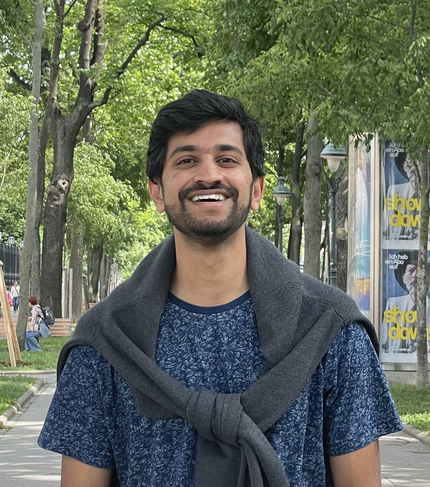

Aravind Gollakota
I am an ML research engineer at Apple, working broadly on principled
methods for reliable machine learning, including uncertainty
quantification and related topics. My background is in machine learning
theory and theoretical computer science. I received my PhD in CS at UT
Austin in 2023 under Adam
Klivans, and my undergraduate degree in math and CS at Cornell
University in 2017.
Email, LinkedIn
Papers
(authors in alphabetical order unless indicated by *)
- Provable Uncertainty Decomposition via Higher-Order
Calibration
Gustaf Ahdritz, Aravind Gollakota, Parikshit Gopalan, Charlotte Peale,
Udi Wieder
International Conference on Learning Representations (ICLR) 2025, to
appear
[arxiv]
- An Efficient Tester-Learner for Halfspaces
Aravind Gollakota, Adam R. Klivans, Konstantinos Stavropoulos, Arsen
Vasilyan
International Conference on Learning Representations (ICLR) 2024
[arxiv]
- Agnostically Learning Single-Index Models using
Omnipredictors
Aravind Gollakota, Parikshit Gopalan, Adam R. Klivans, Konstantinos
Stavropoulos
Neural Information Processing Systems (NeurIPS) 2023
[arxiv]
- Ambient Diffusion: Learning Clean Distributions from Corrupted
Data
Giannis Daras, Kulin Shah, Yuval Dagan, Aravind Gollakota, Alexandros G.
Dimakis, Adam R. Klivans (*)
Neural Information Processing Systems (NeurIPS) 2023
[arxiv]
- Tester-Learners for Halfspaces: Universal Algorithms
Aravind Gollakota, Adam R. Klivans, Konstantinos Stavropoulos, Arsen
Vasilyan
Neural Information Processing Systems (NeurIPS) 2023 (Oral
presentation)
[arxiv]
- A Moment-Matching Approach to Testable Learning and a New
Characterization of Rademacher Complexity
Aravind Gollakota, Adam R. Klivans, Pravesh K. Kothari
Symposium on Theory of Computing (STOC) 2023 (invited to SIAM
Journal of Computing special issue)
[arxiv] [video]
- Hardness of Noise-Free Learning for Two-Hidden-Layer Neural
Networks
Sitan Chen, Aravind Gollakota, Adam R. Klivans, Raghu Meka
Neural Information Processing Systems (NeurIPS) 2022 (Oral
presentation)
[arxiv] [video]
- On the Hardness of PAC-learning Stabilizer States with
Noise
Aravind Gollakota, Daniel Liang
Quantum 6, 2022
[arxiv]
- The Polynomial Method is Universal for Distribution-Free
Correlational SQ Learning
Aravind Gollakota, Sushrut Karmalkar, Adam R. Klivans
Technical note, 2020
[arxiv]
- Statistical-Query Lower Bounds via Functional
Gradients
Surbhi Goel, Aravind Gollakota, Adam R. Klivans
Neural Information Processing Systems (NeurIPS) 2020
[arxiv] [video]
- Superpolynomial Lower Bounds for Learning One-Layer Neural
Networks using Gradient Descent
Surbhi Goel, Aravind Gollakota, Zhihan Jin, Sushrut Karmalkar, Adam R.
Klivans
International Conference on Machine Learning (ICML) 2020
[arxiv] [video]
- Packing Tree Degree Sequences
Aravind Gollakota, Will Hardt, István Miklós
Graphs and Combinatorics 36, 2020
[arxiv]